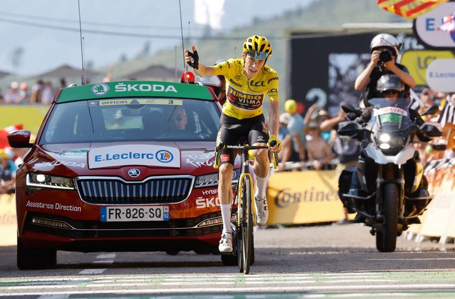

Jonas Vingegaard
Meer info over Jonas Vingegaard
Hier zie je Jonas Vingegaard die de 18 rit van de Tour de France 2022 wint. De twee voorgaande jaren won Tadej Pogacar de Tour. Dus de vraag was, kan er dit jaar iemand Pogacar van de Tourzege houden. Vingegaard nam het geel over van Pogacar in rit 11, waar Pogacar voledig door het ijs zakte en Jonas maarliefst 3 minuten nam. Hoeveel Pogacar nog aanviel Vingegaard plooide niet. In rit 18 de laatste bergrit bleef Pogacar aanvallen op de voorlaatste klim maar Vingegaard bleef erbij. In de afdaling slipt Vingegaard weg maar hij blijft wel recht. Een beetje daarna schat Pogacar een bocht verkeerd in en komt naast het asfalt terecht daar liggen steentjes, doorop schuift Tadej weg en valt. Jonas wacht sportief en ze geven elkaar een handje. Ondertussen is Wout van Aert samen met Martinez en Pinot de laaste restanten van een kopgroep van ruim 30 man. Wout versnelt op de slotklim en alleen Martinez kan nog volgen. Dan zijn Vingegaard en Pogacar er al. Wout zet zich op kop voor Jonas. Ze zijn nog met zen drieën : de groen trui, de gele trui en de witte trui oftewel : van Aert, Vingegaard en Pogacar. Wout blijft tempo rijden tot Tadej kraakt, dat geven de Jumbo-Visma's vleugels. Wout blijft beuken tot hij er bij wijze van spreken bij neervalt. Dan blijft Jonas tempo rijden tot de finish en wint de rit en staat 3 minuten 26 voor op Tadej. Vingegaard wint die Tour.
palmares
Tour de France | 2022-07-24
Tour de France | Stage 18 2022-07-21
Tour de France | Stage 11 2022-07-13
Critérium du Dauphiné | Stage 8 2022-06-12
Drôme Classic | 2022-02-27
Settimana Internazionale Coppi e Bartali | 2021-03-27
Settimana Internazionale Coppi e Bartali | Stage 4 2021-03-26
Settimana Internazionale Coppi e Bartali | Stage 2 2021-03-24
UAE Tour | Stage 5 2021-02-25
Tour de Pologne | Stage 6 2019-08-08